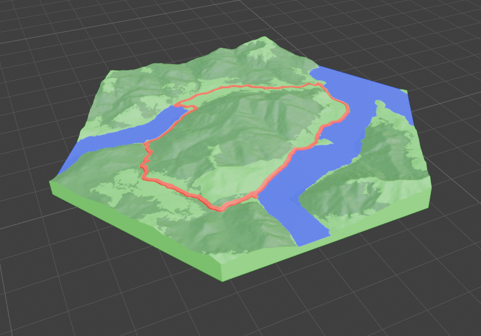
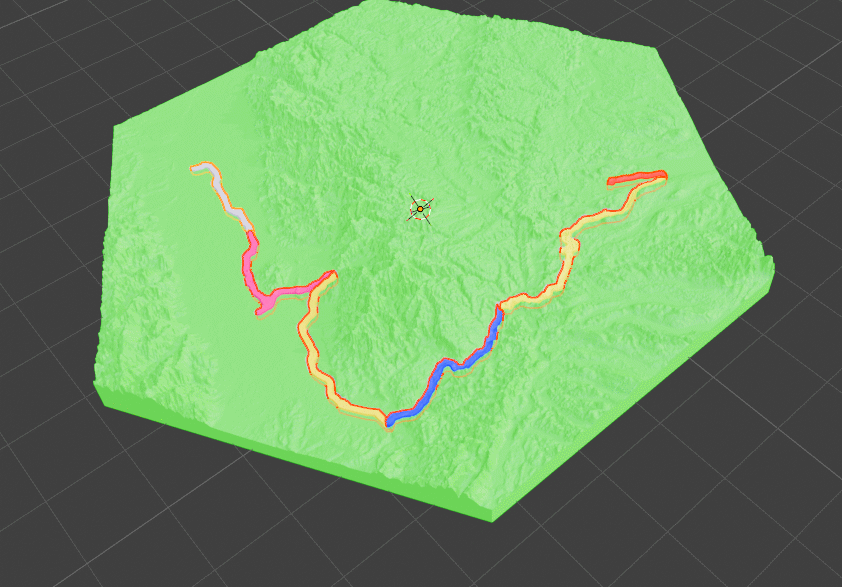

Convert Your GPX Files Into 3D Printed Maps
Download Blender for Free · Install this Addon for Free · No Accounts · No Tracking · Full Control

Download Blender for Free · Install this Addon for Free · No Accounts · No Tracking · Full Control
Simple Process
Three steps to turn your outdoor memory into a physical keepsake.
Head out on any hike, bike, or trail run and record your tour using Apps like Strava or Komoot.
Load your GPX file, set a few parameters, and watch your track become a detailed 3D terrain mesh.
Export a print-ready files to your slicer and bring your adventure to life as a physical object you can hold and display.
What You Get
Real-world data, powerful tools, and premium extras. everything you need to print your adventures.

Terrain meshes built from real elevation data. every ridge, valley, and summit accurately represented.

Real-world data colors your map automatically. lakes, rivers, forests, and cities all included.

Reduces waste, speeds up printing, and works great with single-color printers. clean and efficient.

Choose and configure frames to finish your map with a polished, display-ready look.

Print your map as a square, circle, hexagon, and more

Add real building footprints and road networks to your terrain for rich, detailed urban maps.

Use your prints for commercial projects, gifts, or products

Your data never leaves your PC. No accounts, no tracking, no cloud. fully offline and private.

Use Multiple GPX files to fit on one map. For Multi Day Trips or to map down a whole region

Unlock exclusive Shapes like Sliding Puzzles or Jigzaw puzzles

Split large areas across multiple print tiles that connect seamlessly for wall-scale terrain maps.
Start with the free version or unlock the full feature set with premium.
FAQ
Install TrailPrint3D in Blender, click "Generate", and select your GPX file. The add-on automatically downloads real elevation data for your route and builds a 3D terrain mesh you can export and 3D print.
Yes. Export your activity as a GPX file from Strava, Komoot, Garmin, or any GPS app — TrailPrint3D supports any standard GPX file.
TrailPrint3D exports STL and OBJ files, which are compatible with all major slicers like PrusaSlicer, Bambu Studio, and Cura.
Yes — the core add-on is completely free to download on MakerWorld and Printables. A Premium version unlocks advanced features like multi-GPX maps, special shapes, and multi-tile printing.
TrailPrint3D runs inside Blender, which is available on Windows, macOS, and Linux — so yes, it works on all platforms.
Yes. TrailPrint3D includes commercial use rights, so you can sell prints, use them for gifts, or include them in products.